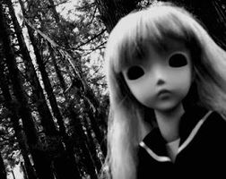
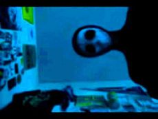
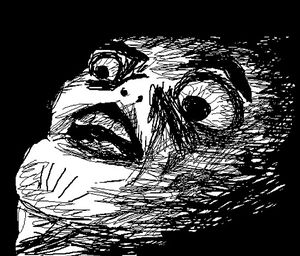

Creepypasta
 De: La Frikipedia, la enciclopedia extremadamente seria.
De: La Frikipedia, la enciclopedia extremadamente seria.
| De la serie Literatura para todos:
|
| Creepypasta
|
| 
|
| Si esta imagen no te traumó,, de seguro ya has leído creepy-pastas.
|
|
| Creador
|
IP anónima, el amigo de un amigo, un ex-caricaturista o algún mañoso.
|
| Época
|
De oro.
|
| Estilo
|
Gracioso.
|
| Idiomas usados
|
Ola taringeros, oi les traigo una istoria real q nkontre n interné.
|
| Estructura
|
Principio, desarrollo, final abierto, precuela, precuela, precuela....
|
| Dificultad
|
666
|
| Notas
|
Si repites "frikipedia" 3 veces, a la media noche con las luces apagadas, un friki aparecerá detrás de tí y te meterá un sable láser por el culo.
|
«¡¿Que carajos es esto?!»
~ Tú meándote al leer un Creepy-pasta
Un Creepy-pasta es una historia real, que es publicada en la web por frikis o usuarios generalmente normales no como en esta página que todos están locos, que llegaron a vivir en carne propia los sucesos contados.
En los últimos años han sido explotados por loquenderos nazis y taringueros, que, a medida que se expande sufre los efectos del juego "teléfono descompuesto". Por lo que si buscas leer sobre el creepy-pasta de Pacman, terminarás leyendo una fumada sobre Kirby.
Definición
La palabra creepy-pasta proviene de la palabra escrita en gringolandés "Creep", que significa "Extraño" (para los que son bien ÉXITO en el inglés) y "Pasta" como las pastas que preparan los italianos, traducido como "Pastas extrañas"; lo que hace creer que los Crepypastas tienen origen en los restaurantes de Italia. O bien proviene de la palabra yugopotamiense Copy & Paste, que en español es Copiar y pegar, que es lo que tú haces a la hora de hacer las tareas del instituto; o un frikipedista a la hora de escribir un artículo.
Características
- Por lo general, un creepy-pasta nace de una imagen, como la de ese tío pálido:
- También puede salir como el acné, sin razón o fundamento alguno, y en cualquier parte del
culo mundo.
- Siempre tendrá la intención de hacer dormir al lector con la sabana hasta la cabeza del trauma.
- Siempre tiene la frase "Cuanto me arrepenti de hacer esto".
- En alguna parte, suele incluir una escena con sangre.
- La mayoría de las veces se cuentan en primera persona, es decir, en vez de referirse a él, se refieren a yo.
- Siempre va a haber un antagonista que desea la sangre y órganos del protagonista, simplemente porque tiene una picazón tremenda en los testículos.
- Curiosamente, los mejores creepy-pastas no están contados en primera persona.
- Algunos los escriben ex empleados de algún canal de caribarturas, en el que se expone un episodio perdido o xxx, arruinando la infancia de muchos.
- El cartucho maldito del nintendo 64, Supernintendo, Play o Arkadias, en el que si lo juegas, pierdes la virginidad.
- En Todas las Creepypastas de Videojuegos ,el videojuego se ha comprado por la calle a un
indigente
- otras son mas malas que las canciones de justin bieber
Comparación
A continuación se hará una comparación entre las características de un creepy-pasta mas malo que pegarle a tu mamá (un creepy-pasta moderno) y un artículo de La Frikipedia:
* CREEPY-PASTAS
- Una creepy-pastas narra sucesos y anécdotas que no tienen sentido.
- La mayoría de los creepy-pastas buscan deformar los héroes de tu infancia y convertirlos en maníacos homicidas.
- Los creepy-pastas buscan entrar en tu mente y perturbarla.
- Los creepy-pastas van cambiando dependiendo de las personas que lo cuenten.
- Un creepy-pasta es una historia hecha por usuarios frecuentes de internet.
|
* ARTÍCULO CUALQUIERA DE LA FRIKIPEDIA
- Un artículo de la frikipedia habla sobre personajes o temas de una manera que no tiene sentido.
- Todos los artículos de la frikipedia buscan deformar a los héroes de tu infancia y convertirlos en pedófilos violadores adictos a los estupefacientes.
- Un artículo de la frikipedia entra en tu mente y la perturba.
- Los artículos de la frikipedia van cambiando debido a que no falta el troll que se quiera tirar el artículo con sus estupideces.
- Un artículo de la frikipedia es una pendejada creada por adictos al internet.
|
Historia
Los creepy-pastas nacieron del sobaco de un niño mas o menos de tu edad, que un día muy soleado y alegre se quedó clavado en la computadora toda la tarde viendo pr0n, entonces como todo se le quedó grabado en la cabeza, empezó a tener pesadillas con El Fary teniendo sexo con elefantes y haciendo otros actos asquerosos, cuando el niño despertó, para calmar un poco el trauma encendió la TV, cambiando los puñeteros canales, se topó con el canal de Hell's Kitchen. Entonces al niño le entró la gana de escribir todo ese trauma que había sufrido en una hoja de papel, luego la subió a Internet y de allí los demás le copiaron.
En realidad, lo anterior también es un Creepypasta sobre el origen de los creepypastas (el más aterrador de todos).
 Una de las imágenes sobre-explotadas por culpa de los creepy-pastas.
Como crear un creepy-pasta
- Sé adicto a La Frikipedia
- Si no eres adicto, ahora lo eres.
- Si ahora no lo eres, ahora si lo eres.
- Acuérdate de un evento traumático que te haya ocurrido.
- Siéntate en tu escritorio bébete un RedBull, una botella de Tekila y métete unas buenas anfetaminas.
- Empieza a escribir como loco (asegúrate de tener abierto el World).
- Añádele una imagen editada de tu hermana en blanco y negro.
- Súbelo a internet.
- Lísto!
- Si no, entonces invéntate cualquier mierda.
Algunos ejemplos
Aquí se muestran varios títulos de un creepy-pasta o una creepy-pasta no sé, me importa un carajo:
 Típica reacción al leer un creepypasta.
- Retratos.
- Amor de madre.
- Jeff the Kill Bill.
- Jane the Killer.
- Jeff the killer Jr.
- No solo los perros follan.
- La Nuit.
- El cartucho xxx de Zelda.
- Angel guardián.
- El vecino de Jeff the killer.
- El verdadero origen de Jeff the killer.
- El verdadero VERDADERO origen de Jeff the killer.
- El artículo perdido de frikipedia.
- Blind Maiden.
- Iron Maiden.
- Rozen Maiden.
- smile.tecagasdemiedo.
- los deintes postisos de la abuela.
- This Man(El tipo que se aparece en tus sueños y te viola)
- Slenderman
Véase también
Mas creepy-pastas
Autor(es):
- Fordus
- Gñapero Solitario
- Likan003
- Salazar Slytherin
- Anipartom
- Jeffrey
- DarkTemplarWar
- Rodriog
- AshSalsaDeTomate
- JonathanXD
Frikipedia 2005-2016, Licencia
GFDL 1.2 - Extraído por FrikiLeaks